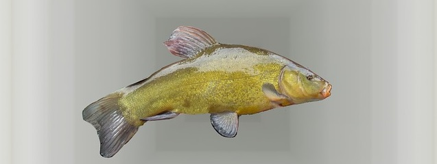
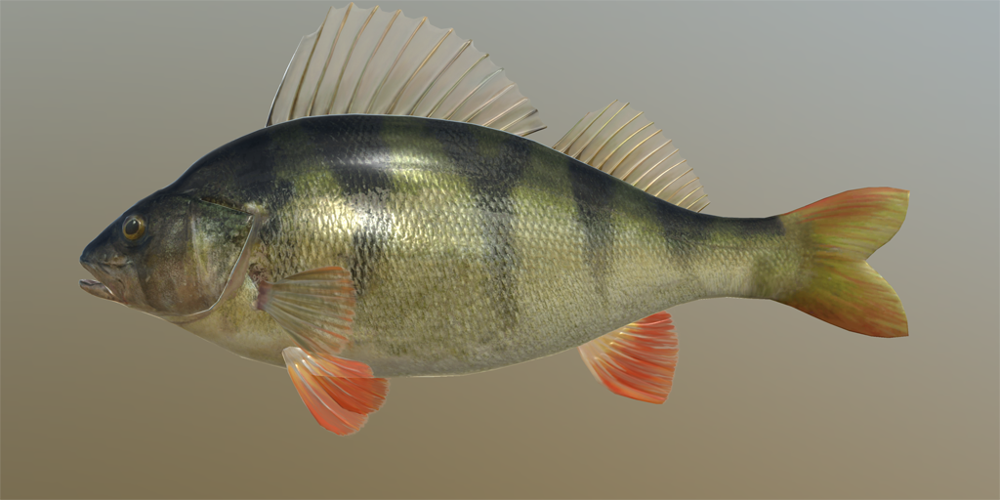
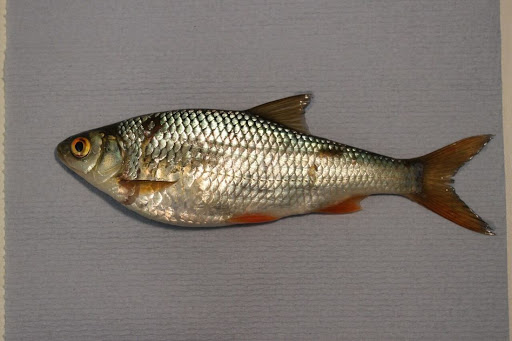
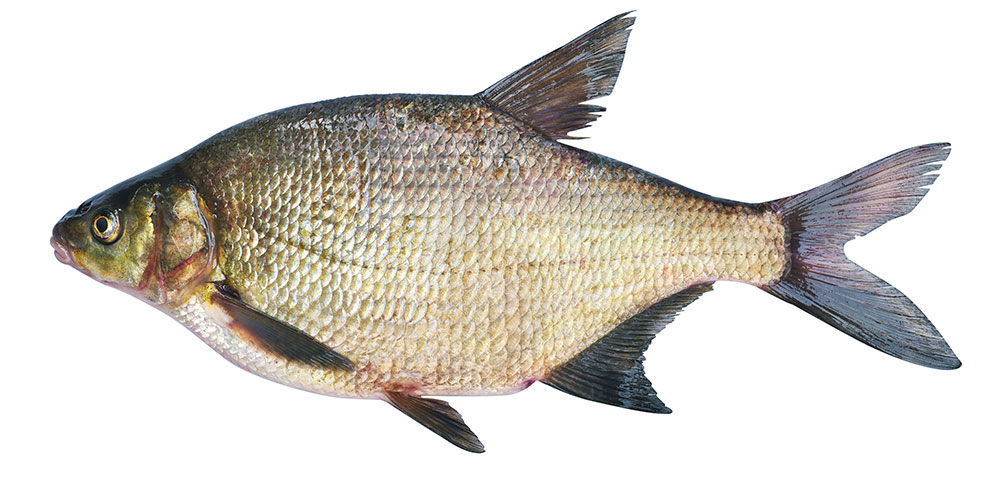
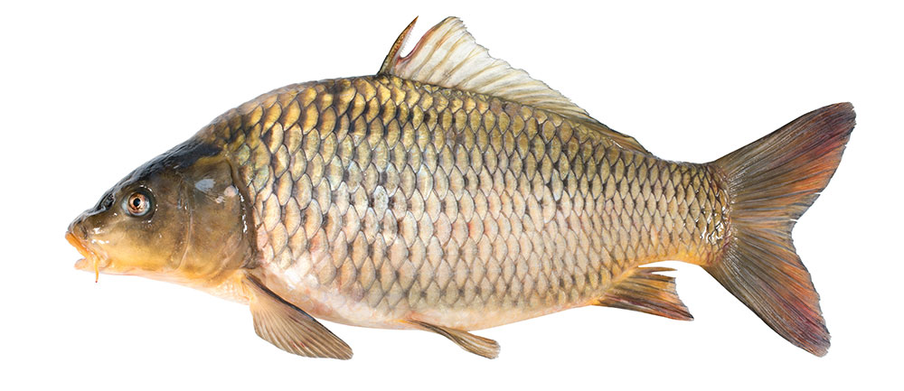
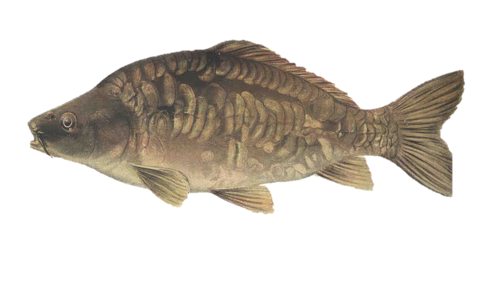
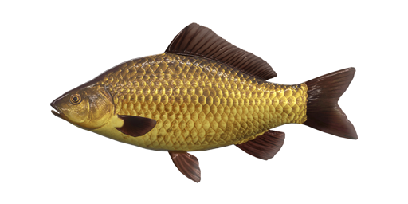

Know your fish
This page is an introduction into species of fish most commonly found in commercial fisheries.
Tench

The tench is one of my favourite species to catch. It's not the biggest fish but it puts up a gheck of a fight with its caudal
fin"(tail fin to you and me)" giving this fish a lot of power, it's a green slimey fish that tends to feed off the bottom of
the ..... best way to target a tench is to use a feeder set up, best bait to use in my opinion is worms.
perch

The perch is easy to recognise with its orange fin and spikey front dorsal fin, stripey body. Not a big fish, average is between 4oz and 1lb but can grow upto
5lb. I'd recommend you use a float setup and best bait to use worms or maggots
Roach

The roach is one of the smaller species of fish you'll come across and some anglers might get irritated if they're trying to
catch a bigger fish, but they'll keep you occupied until a bigger fish comes along. Tackle to use - float, best bait - single maggot.
Bream

The bream can get up top around 4.4lbs to 8.8lbs and is often refered to as a slab due to its shape. best tackle to use..
Common Carp

The carp is one of the biggest fish in uk commercial fisheries and some anglers will only target the carp because of its size and the fight the fish puts up.
Mirror Carp

Very similar to the common carp and easy to confuse the two.
Hybrid F1 Carp

Hybrid F1 carp, commonly refered to as F1 is the smallest species of carp and are great fun to catch
Copyright Andy V 2020